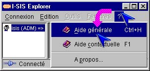
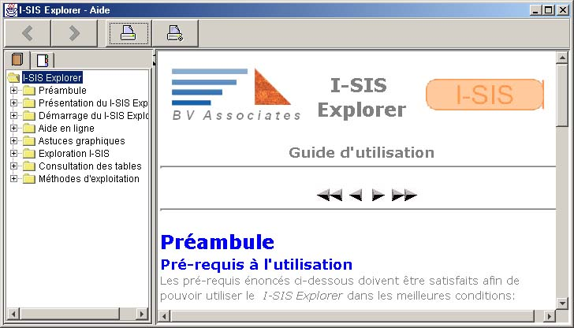
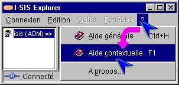
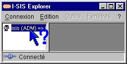
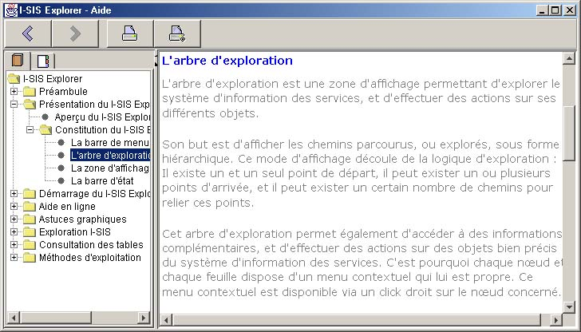
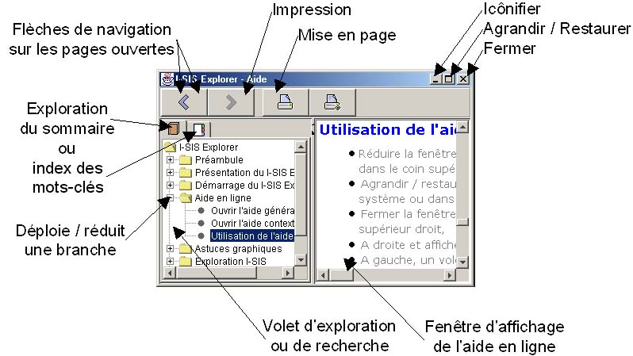

I-SIS Explorer

Guide d'utilisation
|
|
I-SIS Explorer |
|
|
Guide d'utilisation |
||
L'aide en ligne est disponible sur tout I-SIS Explorer ouvert, même déconnecté (cf. «Se déconnecter»). Elle s'ouvre par deux moyens : l'aide générale affiche son sommaire, la contextuelle affiche une page relative à l'objet cliqué.
Ensuite, vous êtes libre de naviguer dans l'aide ouverte.
Cliquez "?" de la barre de menu, pour afficher le sous-menu d'aide,
Cliquez "Aide générale",

L'aide en ligne s'affiche sur sa première page de sommaire.

Cliquez "?" de la barre de menu, pour afficher le sous-menu d'aide,
Cliquez "Aide contextuelle",

Le pointeur de la souris se transforme en ,
Cliquez un objet pour obtenir une aide à son sujet,

L'aide en ligne s'affiche sur une page concernant l'objet cliqué (l'arbre d'exploration dans cet exemple).

Réduire
la fenêtre en cliquant sur son bouton  (
( sous Linux),
dans le menu déroulant à gauche, ou dans le coin supérieur droit,
sous Linux),
dans le menu déroulant à gauche, ou dans le coin supérieur droit,
Agrandir
/ restaurer la fenêtre en cliquant sur son bouton  /
/
 (
( /
/  sous Linux),
dans le menu système ou dans le coin supérieur droit,
sous Linux),
dans le menu système ou dans le coin supérieur droit,
Fermer
la fenêtre en cliquant sur son bouton  (
( sous Linux),
dans le menu système ou dans le coin supérieur droit,
sous Linux),
dans le menu système ou dans le coin supérieur droit,
A droite et affiché le contenu de la page d'aide en cours,
A gauche, un volet d'exploration propose une arborescence de l'aide, ou un index des mots-clés. Le choix se réalise en cliquant sur l'un des deux onglets du volet d'exploration,
La barre de menu de l'aide de I-SIS Explorer présente quatre boutons. Les deux premiers sont des flèches, qui permettent de naviguer sur les pages ouvertes. Les deux suivantes effectuent leur mise en page et leur impression.

Copyright © 2003 BV Associates. Tous droits réservés.